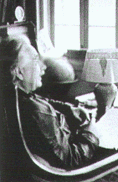

| |
|
1916
  Einstein
"Genel Görelilik Kuramý" olarak bilinen çalýþmasýný
yayýmladý. Bu çalýþma bilim dünyasýný sarsan görüþler
içeriyordu. Kuramýn öngörülerinin deneysel kanýtlarýysa
ancak Birinci Dünya Savaþý'ndan sonra, Mayýs 1919'da
Gine Körfezi'ndeki Principe adasýnda ve Brezilya
Sobral'de gerçekleþtirilen Güneþ tutulmasý gözlemleri
sonucu elde edildi. Einstein
"Genel Görelilik Kuramý" olarak bilinen çalýþmasýný
yayýmladý. Bu çalýþma bilim dünyasýný sarsan görüþler
içeriyordu. Kuramýn öngörülerinin deneysel kanýtlarýysa
ancak Birinci Dünya Savaþý'ndan sonra, Mayýs 1919'da
Gine Körfezi'ndeki Principe adasýnda ve Brezilya
Sobral'de gerçekleþtirilen Güneþ tutulmasý gözlemleri
sonucu elde edildi.
|
| 1918
Tarýmda
benzin motorlu traktörler kullanýlmaya baþladý. Üretimin
artmasýyla birlikte çiftçiler yalnýz kendi
gereksinimlerini karþýlamak için deðil, piyasaya mal
satmak için de çalýþmaya baþladýlar. |
| 1921
Soðutucular
gündelik yaþamda. Üretilmeye baþlayan elektrikli
buzdolaplarý yiyeceklerin saklanmasýnda yeni bir çýðýr
açtý. |
| 1921
Hermann
Rorschach, kendi adýyla anýlan ve yansýtma tekniðine
dayanan psikolojik testler uygulamaya baþladý. |
| 1921
Robot
sözcüðü ilk kez kullanýldý. Çek oyun yazarý Karel
Capek, Rossum's Universal Robots (Rossum'un Evrensel
Robotlarý) adýný verdiði oyununda verilen emirleri düþünmeden
yerine getiren makineleþmiþ insanlardan söz ediyordu.
Robot sözcüðü Çek dilinde angarya iþ anlamýna
geliyordu. |
|
| 1916
Karadeliklerin
varhðýna dair ilk
varsayým ortaya atýldý. Alman gökbilimci Karl
Schwarzschield, yeterli kütleye sahip cisimlerden kaçýþ
hýzýnýn ýþýk hýzýna yaklaþabileceðini, bu
nedenle doðrudan gözlemlenemeyeceklerini kanýtlamak
amacýyla, genel denklemlerden yararlanarak karadelik
kuramýnýn temellerini attý. Çekimlerinden ýþýk
dahil hiçbir þeyin kaçamayacaðý bu cisimlere
karadelik adýnýn verilmesi yaklaþýk 50 yýl sonra
olacaktý. |
| 1917
Sonar
kullanýlmaya baþladý. Ses dalgalarý yoluyla
cisimlerin yerini saptayan bu aracýn temel ilkeleri
Fransýz fizikçi Paul Langevin tarafýndan oraya atýlmýþtý.
Gemilerde ve denizaltýlarda genel kullaným alaný
bulan sonar, deniz yolculuklarýný daha güvenli kýldý. |
| 1920
ABD'de
düzenli radyo yayýnlarý baþladý. Ayný yýl Ýngiltere'de
de radyo yayýnlarý baþlamýþtý.
|
| 1921
Kanadalý
bilim adamlarý Frederick G. Banting ve Charles H. Best,
pankreas özütünden insülin elde ettiler. Bu buluþ,
þeker hastalýðý tedavisinde çýðýr açtý.
|
| 1922
Tutankamon'un
mezarý bulundu. Mumyanýn bulunduðu odaya ilk kez Ýngiliz
kazýbilimci (arkeolog) Howard Carter girdi. Mýsýr'da
19. sülale döneminde "Amarna krallarý"
olarak bilinen Ahenaton, Smenhkare, Tutankamon ve Ay'ýn
adlarý firavunlar listesinden silindiði için mezarýn
yeri unutulmuþtu. Bu sayede özgün haliyle, bozulmadan
bulunan mezar, birçok arkeolojik bulgu saðladý.
|
|
|